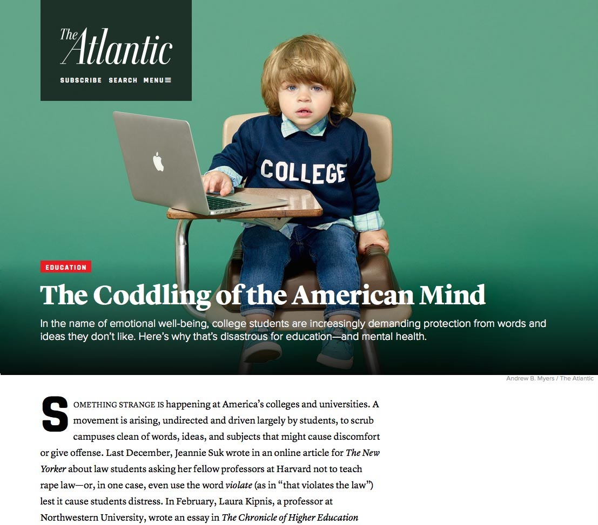

Today’s web design seems to change at a moment’s notice. Suddenly, one-page websites are in, and every other organization has a widescreen image taking up prime homepage real estate. Behind the scenes, in the murky world of web standards and development, the building blocks of the internet are slowly changing, too. In 2014, the governing body of HTML, the internet’s primary coding language, officially released the fifth version of its language: HTML5. The last major HTML release, HTML 4.0, was introduced seventeen years earlier, and HTML5’s introduction brought in long-awaited tools for developers to use, and new and more refined ways to manipulate content made for the web.
But among the glamour shots of new HTML5 features, a member of the old guard still stands strong: <span>. The HTML development community's decision to create <span>, and the very existence of a generic container such as <span>, shaped the future of the HTML language in no one simple way. In the evolving technology of HTML, <span> is the ancestor of many now-standard HTML elements, the transitional step between future elements and their conception, and the back-up when simply nothing else will do.
Some perspective
This analysis builds on the theoretical framework discussed by Christina Haas in On the Relationship Between Old and New Technologies. Haas’ work, in the above paper and elsewhere, studies writing technologies. Central to her arguments is the idea that, if we are to, construct an historically sensitive, empirically driven theoretical account of literacy technologies,
(that is, “historicize” a technology) we must first rethink the relationship between old and new technology.
Haas explains that technological evolution is never a straightforward process—there is no simple replacement model, where new technology simply replaces prior technology. Haas also refutes a model of straightforward progress, where new means better, and new technologies are obvious improvements in quality, efficiency, and power.
The true relationship between new and old technology is much more complicated. Haas constructs this relationship using a number of concepts from the Soviet semiotician Lev Vygotsky and the Dutch philosopher Wiebe Bijker. In my analysis of <span>, I will focus on Haas’ interpretation of Vygotsky’s historical genetic method and Bijker’s concept of the non-linearity of technological development.
In Haas’ hands, Vygotsky's historical genetic method specifies that, [u]nderstanding twentieth-century literacy means understanding the multiple technologies that support it, have supported it, and continue to support it.
In this context, to fully understand what the HTML element <span> is and what it does, we must also discuss where this element came from and how it came to be. This understanding in turn allows us to better understand literacy today, particularly literacy in the web environment.
Haas’ wielding of the non-linearity of technological development readily fuses with the necessity of history. Essentially, Bijker’s theory argues that, technological development…cannot be properly understood in hindsight.
Like the evolution of a species, technological evolution has its fair share of fits and starts—multiple, rival technologies can and do exist, and there is no single, unbroken line between a technology’s origin and present. Only by recognizing this complexity can we begin to understand a technology today. For <span>, this requires understanding the multiple paths that led to the development of a generic inline container.
<span> what?
The HTML <span> element is a generic inline container for phrasing content, which does not inherently represent anything.
The Mozilla Developer Network
Thanks to Vygotsky, to talk about <span>, we must first discuss <span>'s mother language, HTML (Hypertext Markup Language).
HTML is a markup language, which means that code written in HTML describes (or marks) its contents. This description can say something about the code's contents or it can change how its contents are displayed. HTML code is written inside brackets, as seen in the example below.
<p>The bracketed "p" means this text is a paragraph. The paragraph begins with an opening tag (<p>) that notes the start of the paragraph and ends with a closing tag (</p>) that notes the end of the paragraph. Everything contained by the two tags is considered part of an HTML element. In this case, the tags and their contents make up a paragraph element.</p>
Like the <p> element, <span> is a container. However, that's where most similarities end. The <p> element is what's known as a semantic element, or an element that describes the value of content on a page, regardless of the style or appearance of that content.
The <p> element tells us that the text it contains is a paragraph. The <span> element, in comparison, doesn't tell us anything about the meaning of its contents; it just groups the contained text together. For this reason, <span> doesn't have semantic value.
<p> and <span> have another difference: scope. <p> is a block-level element. Block-level elements begin on a new line and generally identify larger blocks of content, like the paragraph made up of individual sentences in the above example. Block-level elements with different semantic meanings could also be used to group multiple paragraphs together or contain an image and its caption. <span>, however, is an inline element. <span> and other inline elements would be used to contain just a piece of the larger block of content, like a word or sentence within a paragraph. This grouping of inline content is known as phrasing. Block-level elements can contain inline elements as well as other block elements, but inline elements can only contain other inline elements. The block-level equivalent to <span> is <div>, the generic block-level container without semantic value.
The development of <span>
HTML was developed through the combined efforts of HTML's governing body, the World Wide Web Consortium (W3C), and W3C's subject-specific working groups, made up of W3C members and invited subject-matter experts.
The element <span> was developed as a response to two problems identified by the working group community: HTML's lack of a generic inline container for encouraging text styling, and HTML's inability to properly render languages read right-to-left. Considering Bijker's theory of non-linear technological development, it is fitting that these two problems were originally identified and solved separately. Only later were the solutions consolidated into the <span> element we see today.
The unique cultural flavor of HTML working groups in 1995, at that point still in their infancy, also influenced the development of the <span> element, particularly its consolidation into a single solution for two separately discussed issues.
The missing container
The generic block-level <div> container was introduced in the HTML 3.0 proposal in March of 1995. The introduction of this novel generic container set the stage for an inline equivalent. In May of 1995, Alex Hopmann, founder of a software company later acquired by Microsoft, mentioned in a reply to the HTML Working Group listserv that he was working on a proposal for character-level—also known as inline—formatting. In this proposal, Hopmann outlined the need for a character-level container that could be used to apply text styles at the character level, instead of by sections, as seen with <div>. Hopmann called this character-level container <c>. At this time, some specific inline elements for common text styles had already been introduced. Text stylings such as bold or italicized text, common in print media, warranted their own elements that easily applied this styling to inline. However, unique text styling at the character level required more acrobatics. A generic inline container like Hopmann's proposed <c> would allow authors to easily add unique and complex styling to words, phrases, and sentences through integration with "stylesheets" written in languages like Cascading Style Sheets, or CSS.
Hopmann was not the only working group member to propose a generic inline container. On July 3, 1995, Benjamin C.W. Sittler proposed the <text> element to the www-style working group. Like Hopmann, Sittler considered a generic character-level element extremely useful for applying styles to certain blocks of text.
The first person to respond was Håkon Wium Lie...the man who first proposed CSS the year before. Lie called the proposed generic inline container very useful indeed,
and said he would talk with Dave Raggett, another major player in W3C, about the idea. Hopmann quickly jumped into the discussion, noting to the working group that his element, <c>, had been proposed first.
The replies to Sittler and Hopmann's exchange reflect an awareness of the end user, particularly this user's interpretation of an element titled <text> compared to an element titled <c>, <font>, or <mark>. The considerations of the end user also sparked a reflection on the desired relationship between semantics and presentation. However, each new entrant to the conversation seemed insistent on tossing another potential name into the hat—or dismissing the idea of semantically neutral elements entirely. Paul Prescod scoffed at the wisdom of equipping users with neutral tags so, incredibly, horrifically easy to abuse when you dont' [sic] feel like looking up a tag in the HTML Spec.
Prescod's concerns were rebutted by Michal Young, who argued:
You can't make html idiot-proof, because idiots are just too clever. If semantically meaningless tags are rigorously excluded from html, some idiots will misuse semantically meaningful tags to obtain formatting effects...A better (but difficult) objective is to encourage separation of presentation from semantics.
Michal Young, www-style@w3.org listserv, July 1995
Michal sees two steps to separating presentation from semantics: making stylesheets powerful enough to create results too complex to mimic using improper HTML, and making these same stylesheets so easy to use that people aren't tempted to misuse HTML instead.
After much conversation and little consensus, the reaction to Sittler's email petered out. Despite the disagreements in response to Sittler and Hopmann's proposals, the <c> element came out on top in the short term. <c> was added to the first draft of HTML and Style Sheets (November 1995) as the new generic inline container. But <c> wasn't around for long...
Internationalization
While the www-style listserv discussed naming conventions and semantics, a different development in HTML was in the works. Because HTML was largely developed by speakers of English or other languages read left-to-right, writing right-to-left languages in HTML was tricky, especially if this right-to-left language appeared on the same page as left-to-right text. The solution was a generic container that could carry semantic attributes like "lang" (language) and "bidi" (bi-directional, for bi-directional text). This proposed element was named <span>.
<span>'s first official appearance is in the September 1995 working draft of Internationalization of the Hypertext Markup Language. In December 1995, Michael J. Hannah suggested to the html-wg and www-style listservs that the new HTML element <c> be replaced by <span>, which was already defined by the working drafts on internationalization. This suggestion was part of a larger move replacing the <style> element with a stylesheet-friendly "style" attribute that could be attached to any element. Thus the <span> we know today was the secondary result of an overshadowing change that shaped HTML and CSS's relationship from that point forward.
Culture of HTML Development
Here in the listservs, the cultural knowledge of the HTML development community becomes clearer. According to the W3C website:
W3C hosts hundreds of mailing lists and archives, many of them public, for the benefit of the Web community at large. By providing this service, we hope to foster a highly responsive and interactive community for creating new ideas and advancing web technologies and culture.
As the interactions between Hopmann, Sittler, Lie, and the other listserv members illustrate, in many cases, web developers had the opportunity to ask questions and propose ideas directly to other developers and people involved in the primary governing body of HTML. W3C's purported focus on responsiveness and interaction clearly helped lead to the public discussion of and action on the issue of a generic inline container. The developers' focus on ease-of-use and efficiency also lead to the consolidation of two solutions into a single element—an example of non-linear and non-simple replacement development at work.
Using <span>
The correct guidelines for using <span> today can be found in the WHATWG HTML Living Standard. The meaning of this standard is clarified by the Mozilla Developer Network page on <span>. Essentially, the standard states that <span> should only be used when no other element better fits the purpose. In this way, <span>'s purpose has remained fairly constant throughout its lifetime—HTML writers and developers use <span> for a number of purposes that no semantic inline element exists to fill. As Michal Young referenced in the www-style listserv, it is better to use <span> for a novel element than to misuse an element with a specific purpose. When W3C or the HTML listserv identifies a particularly popular use for <span> (such as one of its original purposes, designating bi-directional text) they may choose to introduce a new inline element that fulfills this purpose (like <bidi>).
In some of its online articles, The Atlantic has examples of the approved use of <span>. Indeed, The Atlantic uses <span> essentially as Hopmann and Sittler intended: to apply style to a small section of text.
The Atlantic's article 'The Coddling of the American Mind" />In this article, The Atlantic has used <span> to style the first letter of the article in a different font and the first two words in small caps.
<span class="smallcaps">
<b>S</b>
omething strange is
</span>However, <span> can also produce unexpected results. For example, when copying and pasting text from a webpage or document with added formatting, the style of the original document may be copied alongside the text. In some cases, this is the result of the <span> element including attributes such as line spacing, font, and text size. This accidental application of <span> may affect text presentation in the new document.
<span style="font-family: inherit; font-size: 1rem; line-height: 1.4rem;">International political issues can be complicated to relay because they are often tied up in multiple groups’ culture and history. Professor Beeman has used anthropology to contextualize many topics over the years, but most recently he has been able to draw from his knowledge of US-Iran relations to explain the real issues behind the Joint Comprehensive Plan of Action, otherwise known as “The Iran Deal.”</span>To prevent this transfer of styling, users have the option to "Paste as Plain Text," which should remove any <span> tags with additional styling.
<span> can also be used wrong intentionally. In the blog post "Links are not buttons. Neither are DIVs and SPANs," Karl Groves, a web accessibility consultant, rails against the use of <span>s for button-like applications. Groves's angst stems from the established existence of an element for buttons: <button>. As a web accessibility consultant, Groves is largely concerned with this misuse because of how it affects populations who must rely on semantics, not presentation, to browse the web. One such population is blind people.
Images like the above can be readily identified as interactive buttons by sighted people. However, it's not so easy for people navigating blind if the "button" was created using elements like <span>, <a>, or <div> instead of <button>. According to Groves, the semantic meaning of the <button> element considers accessibility in three ways. Buttons made using the <button> element:
- Are device-independent (can be activated using keyboard, voice command, or mouse)
- Have or can have good color contrast
- Identify themselves to accessibility software using attributes like name, state, role, and value
Buttons made using <span>, however, have none of the above considerations. Websites may use non-standard elements like <span> to create buttons, despite the downsides, for a number of reasons—the website may predate the <button>, the author's knowledge, preference, or comfort level may predate the <button>, or the author may have feared compatibility issues with older browsers.
The <button> element is an example of the evolution in HTML that occurred because a generic element like <span> existed. Once again, the evolution of <span> defies a simple replacement model, as the abilities of the <button> element cannot completely replace <span>, but instead flesh out features originally created using your friendly generic container. <span>'s evolution into further elements also subverts the idea of linear technological evolution: no one element can replace <span>, and no single element came before <span>.
<span> today
Since <span> was first added to the September 1997 HTML 4 Working Draft, and officially published in the 1999 publication of HTML 4.01, a number of new inline elements have been added to the HTML tool bag. Many of these elements were created as a result of trends in <span> use, where the semantic meaning of the <span> element was popular enough to warrant a unique semantic element. For example, part of <span>'s origin was the need for a way to group bidirectional text. HTML5 introduced a new inline element that does exactly that: <bdi>. As a result of its generic status, <span> has helped HTML grow as a markup language.
While new elements have somewhat reduced the use of <span>, it is unlikely that every inline semantic grouping will gain a new element. When referring to the affects of new HTML5 elements on <span>'s block-level counterpart, <div>, Mike Robinson states:
You will certainly use <div> less often in HTML5 than you did in HTML 4, but it’s still a valuable element to have in your toolkit. Sure, it’ll be picked last for the team because everyone else is better, but it’ll be the best damn generic container element there is!
Mike Robinson, "You can still use div," July 2010
Unless something radically changes the development of HTML, there will never be a simple replacement of <span>. Though its past may not be simple, through the historical-genetic method, <span>'s future is clear. This handy element will help web developers write semantically correct code and help the HTML development community determine where adjustments should be made to create a richer HTML language, just as it has for the past ten years.
References
Bos, B., Raggett, D., & Lie, H. (1995, November 22). HTML and style sheets (draft-ietf-html-style-00.txt). Retrieved from http://tools.ietf.org/html/draft-ietf-html-style-00
Groves, K. (2014, May 14). Links are not buttons. Neither are DIVs and SPANs. Retrieved from http://www.karlgroves.com/2013/05/14/links-are-not-buttons-neither-are-divs-and-spans/
Haas, C. (1999). On the Relationship Between Old and New Technologies. Computers and Composition, 16, 209–228.
Hopmann, A. (1995, May 2). Re: color text? Retrieved from http://ksi.cpsc.ucalgary.ca/archives/HTML-WG/html-wg-95q2.messages/0508.html
Howe, S. (2015, June 17). Getting to Know HTML. Retrieved from http://learn.shayhowe.com/html-css/getting-to-know-html/
Lie, H. W. (1994, October 10). Cascading HTML style sheets -- a proposal. Retrieved from www.w3.org/People/howcome/p/cascade.html
Lie, H. W. (1995, July 5). Fwd:fonts. Retrieved from https://lists.w3.org/Archives/Public/www-style/1995Jul/0009.html
Peterbe.com. (2005, August 9). Button tag in bloody Internet Explorer. Retrieved from http://www.peterbe.com/plog/button-tag-in-IE
Prescod, P. (1995, July 5). Re:fwd:fonts. Retrieved from https://lists.w3.org/Archives/Public/www-style/1995Jul/0014.html
Robinson, M. (2010, July 13). HTML5 Doctor: You can still use div. Retrieved from http://html5doctor.com/you-can-still-use-div/
Sebastianz. (2015, October 13). Mozilla Developer Network: <span>. Retrieved from https://developer.mozilla.org/en-US/docs/Web/HTML/Element/span
Sittler, B. C. W. (1995, May 2). Fwd:fonts. Retrieved from http://lists.w3.org/Archives/Public/www-style/1995Jul/0003.html
W3C. (2015, December 11). HTML Living Standard: The span element. Retrieved from https://html.spec.whatwg.org/multipage/text-level-semantics.html#the-span-element
W3C. (2015, August 28). W3C: Mailing Lists. Retrieved from http://www.w3.org/Mail/
Young, M. (1995, July 6). Re:fwd:fonts. Retrieved from https://lists.w3.org/Archives/Public/www-style/1995Jul/0018.html